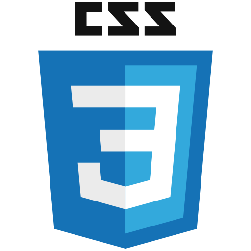
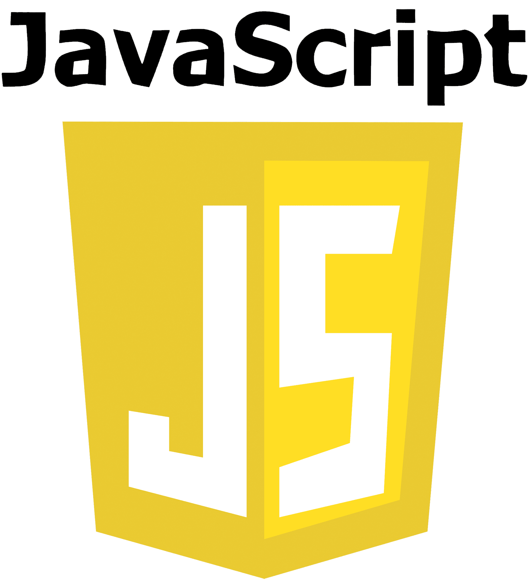

Elementos HTML
Alguns elementos utilizados para estruturar uma página são:
h1— título principal.p— parágrafo.a— link.img— imagem.ul— lista não ordenada.
Fundamentos de HTML, CSS e desenvolvimento Web
O desenvolvimento Front-end está relacionado à parte de uma aplicação que o usuário visualiza e utiliza diretamente.
Para desenvolver uma aplicação Web é importante compreender estrutura, apresentação e comportamento.
HTML não é responsável por criar o design da página. Sua principal função é estruturar o conteúdo
O desenvolvimento Front-end utiliza diferentes tecnologias que trabalham em conjunto.
HTML define a estrutura, CSS trabalha a apresentação e JavaScript permite adicionar comportamentos
HTML é uma linguagem de marcação utilizada para estruturar documentos Web.
Um documento HTML é composto por elementos. Por exemplo, o elemento p representa um parágrafo.
Já o elemento a pode ser utilizado para criar um link
Alguns elementos utilizados para estruturar uma página são:
h1 — título principal.p — parágrafo.a — link.img — imagem.ul — lista não ordenada.Os atributos fornecem informações adicionais sobre os elementos HTML
hrefSsrcalttitlelangEm vez de utilizar apenas div para toda a página, podemos utilizar elementos específicos para representar cada parte
headernavmainsectionarticleasidefooterA tag div continua sendo útil para agrupamentos genéricos.
Este conteúdo está dentro de uma div porque não possui uma função semântica específica.
O HTML também possui elementos utilizados para representar o significado de pequenos trechos de texto.
A tag strong indica grande importância.
A tag em pode indicar ênfase em determinada informação.
A tag mark pode destacar uma informação importante.
A tag small pode apresentar uma observação. Esta é uma informação complementar.
A API permite a comunicação entre diferentes sistemas.
Uma fonte bastante conhecida para consulta é a MDN Web Docs
Uma frase bastante conhecida entre programadores é: “primeiro aprenda a pensar, depois aprenda a programar.”O conhecimento dos fundamentos é importante para compreender tecnologias mais complexas.
Este guia foi atualizado em
A próxima atualização ocorrerá em
Pequenos trechos de código podem ser representados utilizando code.
Por exemplo: Olá, mundo!
<h1>Olá, mundo!</h1>
<p>
Minha primeira página HTML.
</p>
<a href="https://www.w3.org/">
W3C
</a>
Para salvar o arquivo utilize: Ctrl + S
Para copiar utilize: Ctrl + c
Para colar utilize: Ctrl + v
Ao executar determinado programa, o sistema pode apresentar a seguinte mensagem:
Arquivo salvo com sucessoOutro exemplo de saída:
Erro: arquivo não encontrado.Em programação, uma variável pode armazenar diferentes valores.
Considere a expressão:
x = 10
y = 20
30 = x + y


Ranking